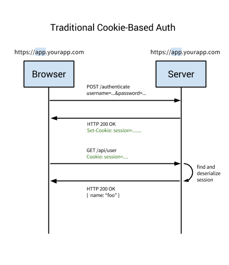
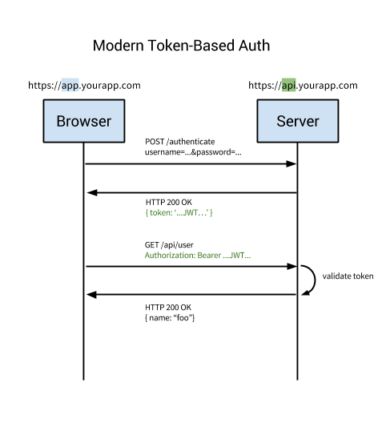

基于Session的认证
HTTP协议是无状态(stateless)的，这意味着，如果在一个请求中，用户传递了用户名和密码，通过了我们的认证。在用户的下一个请求中，我们仍然不能识别这个认证通过的用户，还需要认证一遍，因为两次HTTP请求是没有关联。
为了解决这个问题，session，也就是基于cookie的认证产生了。
基于session认证的流程
- 用户在浏览器中输入账号密码，向服务器发送请求
- 服务器接收到请求后，校验用户数据。校验成功的话，生成一个唯一的，随机的的token，保存下来，发送给用户。唯一性是保证用户登录的唯一性。随机性，如果token是可以猜测的，攻击者伪造token，登录他人的账号。下面使用
Golang随机生成token的例子1
2
3
4
5
6
7func (manager *Manager) sessionId() string {
b := make([]byte, 32)
if _, err := io.ReadFull(rand.Reader, b); err != nil {
return ""
}
return base64.URLEncoding.EncodeToString(b)
} - 浏览器将token保存在cookie中，并且接下来的每个请求，都带上这个cookie。
- 服务器接到带有cookie的请求，解析cookie来确定用户的身份。
- 如果用户退出，发送请求给服务器，服务器删除这个cookie.

cookie认证的主要缺点是：
- 每次用户认证后，服务器都要创建一条记录(session),这个session一般保存在内存中。当很多用户同时认证后，就会有很多条记录，增加服务器负担。
- 如果session保存在内存中，不利于可扩展性。例如，服务器集群做了负载均衡后，认证请求被发送到服务器A，服务器A保存session。后面的请求被发送到服务器B,但是服务器B没有保存这个session，认证失败。一般解决方法是讲session保存在数据库（例如redis），服务器到数据库查询session。但是这增加了查询的开销。
基于Token的认证
基于Token的认证是近几年非常流行的认证方式。基于token的认证中，最常用的是JSON Web Tokens。
基于Token认证的流程
- 用户输入账号密码
- 服务器对用户信息进行校验。校验成功后，返回一个签名的token。
- 客户端将这个token保存下来。
- 后续的HTTP请求中，客户端带上这个token。一般这个token以
Bearer的形式放在请求认证头，但是也可以放在POST请求的body - 服务器对token进行解码，如果token是有效的，继续处理请求。
- 一旦用户退出，token在客户端被销毁，不需要与服务端交互。

token认证的优点
- 无状态
token认证的最大好处是，这个认证是无状态的，服务器不需要保存任何的session或者cookie。 - 保存任意类型的元数据(meatdata)
JWT运行保存任何类型的元数据，只要它是一个合法的JSON格式。 - 只需要一次访问数据库
在基于cookie的认证中，用户需要根据session去查询数据库（关系型数据库或者NoSQL)，这比解码token的时间更长。
另外，一个用户的权限等级，这可以免去查询的消耗。 - 易于实现
对于移动端来说（iOS，Android，lot），使用cookie会用很多的限制。
但是token对移动端来说，都很好实现。
无密码的认证
例如，使用手机号登录。用户输入手机号，服务器发送一个在短时间内有效，只能一次使用的验证码给用户，用户使用验证码登录。
同样的，邮件也是类似的原理。这种登录方式不需要用户记住密码。
登录成功后，服务器返回token给用户。
单点登录(Single Sign-On,SSO)
社交账号登录
这种实现一般是Open Authentication, 详情可以看OAuth介绍